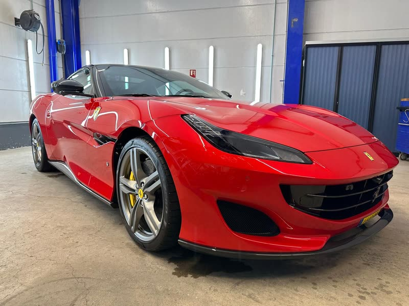
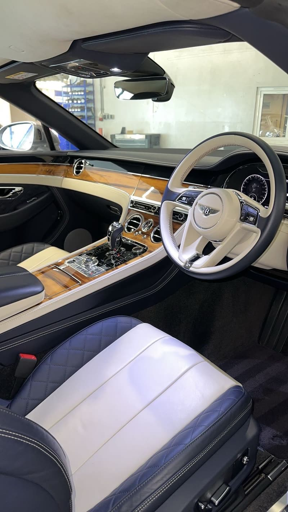
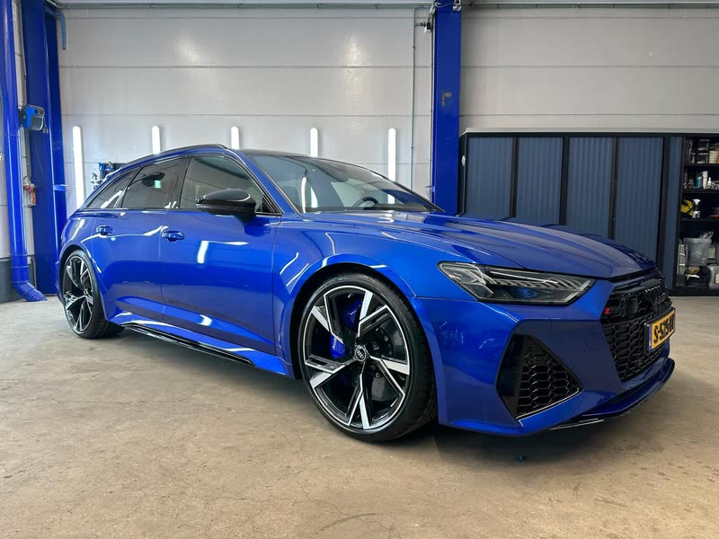
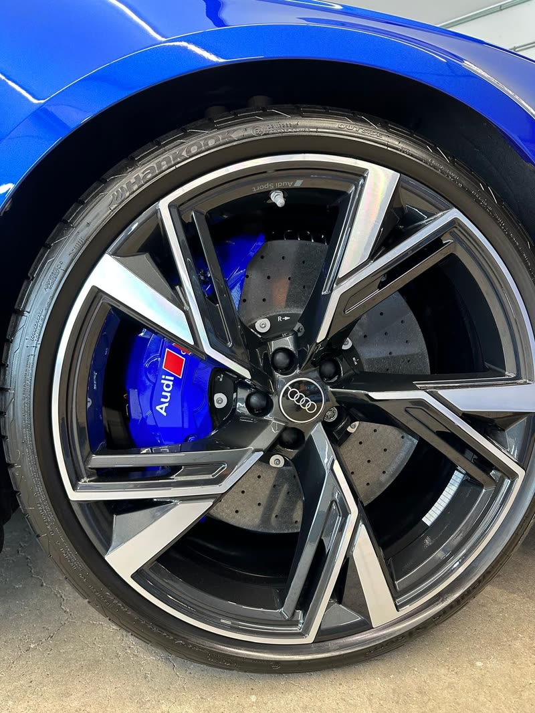
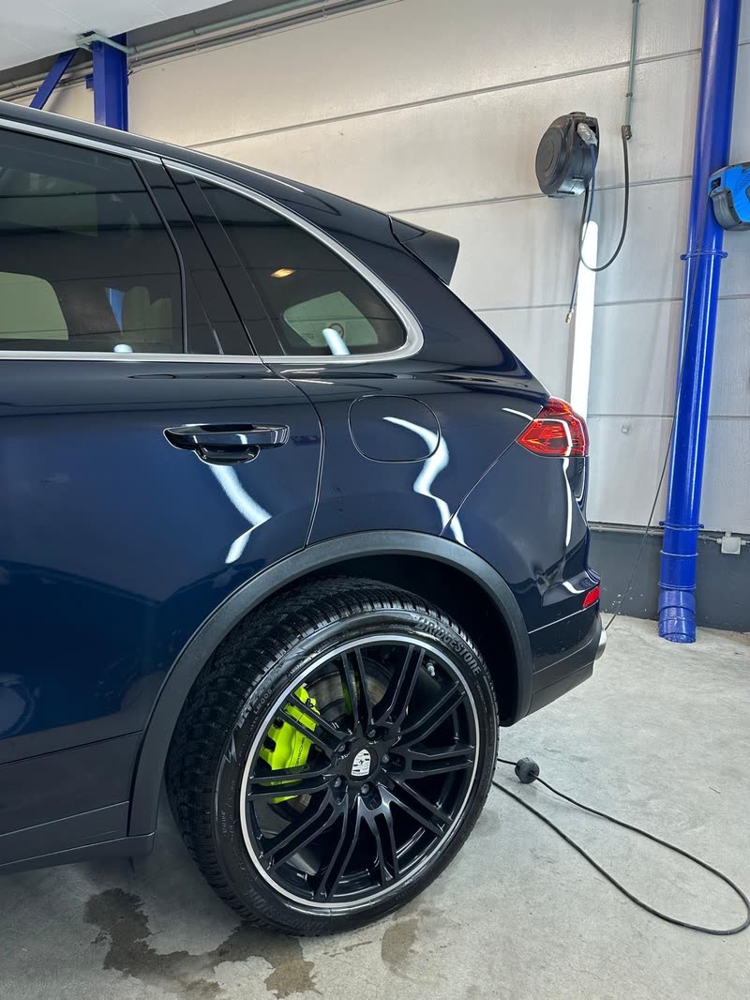
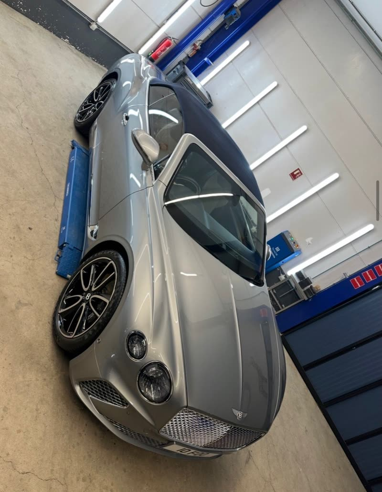
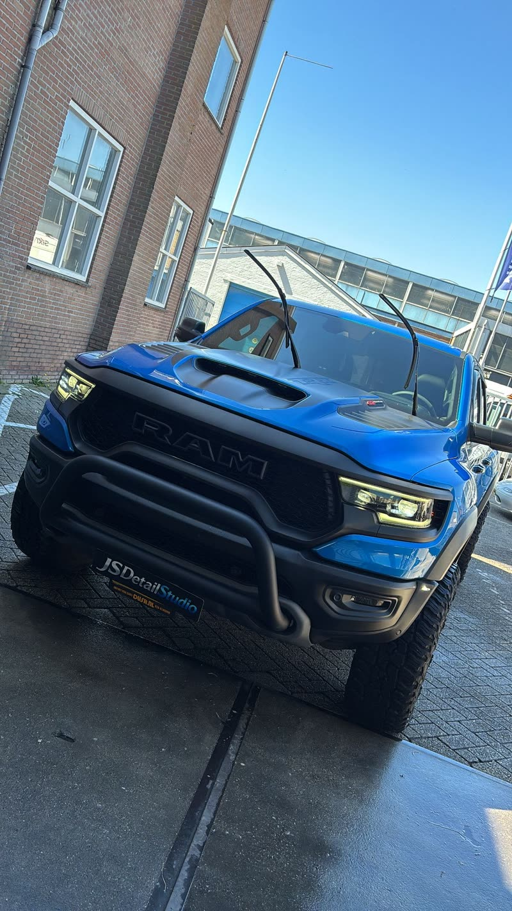

02 · Portfolio
Recent werk
Een selectie detailing-projecten uit de studio: polijsten, keramische coating en interieur detailing. Meer resultaten en video’s zie je op Instagram.







Jouw auto als volgende?
Plan een afspraak — uitsluitend op afspraak, met volledige aandacht.